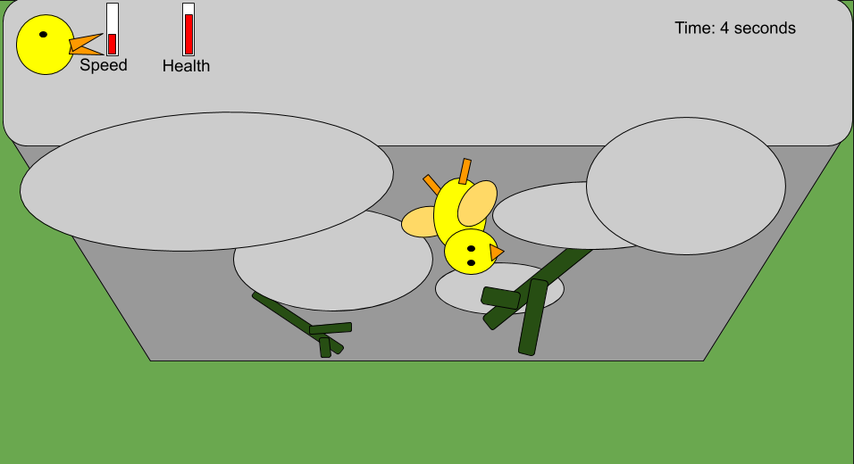

Help guide the chick as it falls down the cliff. Go too fast and the chick is harmed on impact with the ground. Go too slow and the eagle catches up to its delicious dinner. Bump into the rocks and branches to keep control of the speed. (Go for the branches, they won't hurt as much.) And get the chick safely to the ground.
Game Description
Inspiration
Arctic Geese Chicks Jump Off Cliff to Survive | Hostile Planet
Controls
“WASD” - movement “M” - toggle sound “RETURN” - restart level “SPACE” - start game
Game Play
Technologies
Camera
Rafael
The game camera is set in third-person and follows the player using “tweening” to adjust the time of the transition to the target position behind the player.
Collision Detection
Joey
Feather Fall uses PhysX to handle collisions. Each entity in the game has a corresponding collider that is managed by the physics engine.
Deferred Rendering
Chanelle
A deferred rendering system is a technique used to separate the scene’s geometry from post-processing effects such as lighting and motion blur. In feather fall, all of the objects’ geometry is rendered into a buffer. Information from that buffer is then passed through lighting, motion blur, and a final post-processing shader. By sending the geometry through a single render pass, the system also benefits from an improvement in computational memory and efficiency.
HUD
Chanelle
The speed and health of the chick is indicated by a HUD. This was developed by rendering a quad on the screen and managed using a HUD system that keeps track of all of the elements and updates them as needed.
Motion Blur
Rafael
FeatherFall uses motion blur to give a bit more flavor to falling and to indicate speed better. It works by storing the two previous frames and blending those together with the current frame. It also only activates at a certain speed threshold.
 Motion Blur
Motion Blur
NPR Rendering
Kevin
The art style of Feather Fall comes from its contouring and binning. The binning rounds all colors to certain thresholds to give it a more cartoony look. The contouring uses Sobel edge detection to determine where the edges are and then colors those edges brown to give everything a clean outline.
Particle System
Chanelle
The particle system handles the several particle effects throughout the game. Particles are rendered as quads with images with a specific life span and randomization for variation in the particles.
Feather Particles
Procedural Generation
Kevin
Feather Fall uses procedural generation to create a random map for the player to traverse down. The procedural generation works by choosing from a set of 5 differently scaled rocks on each level and removing one of them, and then on each subsequent row of rocks, another of the 5 rocks is taken out, only within 1 unit left and right of the missing rock in the previous row. This way there is a defined path all the way down.
Ragdoll
Joey
The main character in Feather Fall is a ragdoll goose chick which was implemented using the Physx Articulation System. The head and limbs were connected to the torso using spherical joints which allowed the head and limbs to move freely around a point while still being connected to the torso.
Shadows
Joey
Feather Fall uses shadow mapping to render shadows from the perspective of the single light source.
View Frustum Culling
Kevin
Feather Fall originally went with standard view frustum culling, based on the camera angle, but we found that since our camera only travels vertically facing the same direction always, we decided to use a more computationally efficient method of culling based on simple calculations regarding height. Cull if an object is behind the camera of its own radius, or below the camera based on a certain radius, provided by the entity being culled.
Resources
- PhysX | Physx Articulation
- Irrklang | src
- Edge Detection
Development Timeline
Game Proposal
25% Milestone

50% Milestone

100% Milestone

Losing State: Captured by eagle!

Winning State